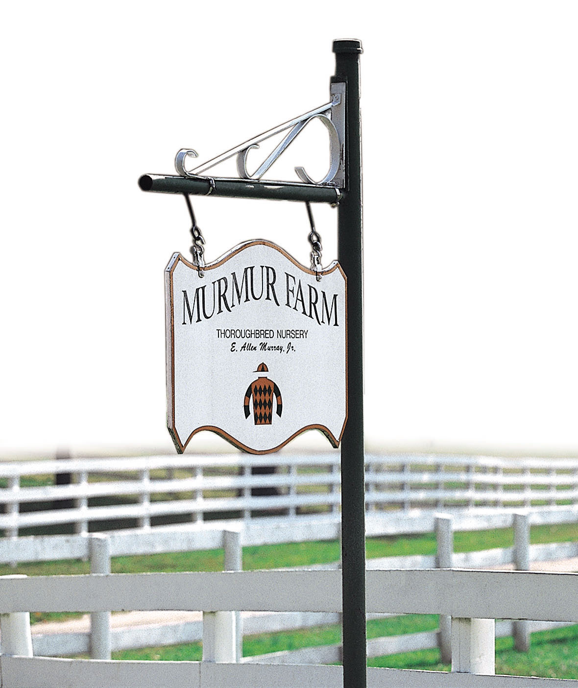

Allen & Audrey Murray
Two Marylanders, one $800 broodmare, and more than six decades of raising racehorses in Harford County.
Where it started
Allen Murray grew up in Havre de Grace back when it was still a racetrack town. He spent most of his career as an electrical engineer for the federal government, while he and Audrey raised three children and, on the side, raised horses.
They entered the business in 1959 with a single broodmare that cost $800, and founded Murmur Farm in 1961. The farm is now on its second home: 131 acres on Stafford Road in Darlington.
Even as the farm grew, it stayed a family operation. The Murrays delivered their own foals and answered their own phones.

Through the years
- 1959Allen and Audrey buy their first broodmare for $800.
- 1961Murmur Farm is founded.
- 2001The Murrays dig deep into their savings to buy the stallion Our Emblem, a horse many in Kentucky had written off.
- 2002Our Emblem's son War Emblem wins the Illinois Derby, then the Kentucky Derby at 20-1 and the Preakness as the favorite. Offers for Our Emblem pour in, and he is later sold to a partnership of WinStar Farm and Taylor Made, reportedly for $10 million.
- 2013Allen Murray dies at 80 at the farm in Darlington, after 58 years of marriage to Audrey. He was survived by Audrey, three children, eight grandchildren and a great-granddaughter.
- 2018Blofeld begins his stud career at Murmur. Audrey turns down offers to sell him, selling shares instead to keep him in Maryland.
- 2021Blofeld's first crop hits the track. By March 2022 they have 12 winners from 13 starters.
- 2024Six Blofeld runners start on Maryland Million Day, and Warrant arrives at Murmur that fall.
- 2026Blofeld and Warrant stand the season at Murmur Farm.
A long line of Maryland sires
Murmur has built its reputation on developing young stallions that suit Mid-Atlantic breeders.
- Norquestor
- Deerhound
- Our Emblem
- Louis Quatorze
- Cherokee's Boy
- Scipion
- Petionville
- Hangover Kid
- Blofeld
- Warrant
Bred and raced by Mrs. Murray
Audrey still owns and breeds racehorses. Recent homebreds include winners Royal Spy and Goldenize, and the filly Persian, out of the Petionville mare Kim's Pet, who ran on Maryland Million Day in 2024.
Our Emblem & War Emblem
War Emblem's Derby and Preakness wins in 2002 brought national attention to a small Maryland farm, and offers for Our Emblem climbed into the millions within weeks.
Read more about Murmur Farm
- The Racing Biz · Nov 2024Grade 3 winner Warrant to stand at Murmur Farm
- Housatonic Bloodstock · Oct 2024A Vintage Villain Takes a Leading Role
- Mid-Atlantic Thoroughbred · Apr 2022On a Roll: Blofeld's success spurs excitement at Murmur Farm
- The Racing Biz · Aug 2013Remembering breeder Allen Murray
- Sports Illustrated · Jun 2002Nags to Riches